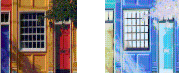
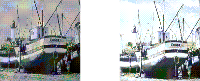
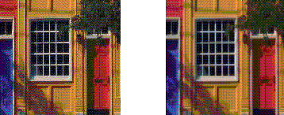
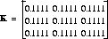
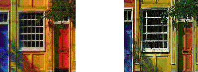

| CONTENTS | PREV | NEXT | Java 2D API |
The image package provides a pair of interfaces that define operations on BufferedImage and Raster objects: BufferedImageOp and RasterOp.The classes that implement these interfaces include AffineTransformOp, BandCombineOp, ColorConvertOp, ConvolveOp, LookupOp, RescaleOp. These classes can be used to geometrically transform, blur, sharpen, enhance contrast, threshold, and color correct images.
Figure 5-4 illustrates edge detection and enhancement, an operation that emphasizes sharp changes in intensity within an image. Edge detection is commonly used in medical imaging and mapping applications. Edge d etection is used to increase the contrast between adjacent structures in an image, allowing the viewer to discriminate greater detail.
The following code illustrates edge detection:
float[] elements = { 0.0f, -1.0f, 0.0f,
-1.0f, 4.f, -1.0f,
0.0f, -1.0f, 0.0f};
...
BufferedImage bimg = new
BufferedImage(bw,bh,BufferedImage.TYPE_INT_RGB);
Kernel kernel = new Kernel(3, 3, elements);
ConvolveOp cop = new ConvolveOp(kernel, ConvolveOp.EDGE_NO_OP,
null);
cop.filter(bi,bimg);
Figure 5-5 demonstrates lookup table manipulation. A lookup operation can be used to alter individual components of a pixel.
The following code demonstrates Lookup-table manipulation:
byte reverse[] = new byte[256];
for (int j=0; j<200; j++){
reverse[j]=(byte)(256-j);
}
ByteLookupTable blut=new ByteLookupTable(0, reverse);
LookupOp lop = new LookupOp(blut, null);
lop.filter(bi,bimg);
Figure 5-6 illustrates rescaling. Rescaling can increase or decrease the intensity of all points. Rescaling can be used to increase the dynamic range of an otherwise neutral image, bringing out detail in a regio n that appears neutral or flat.
The following code snippet illustrates rescaling:
RescaleOp rop = new RescaleOp(1.5f, 1.0f, null); rop.filter(bi,bimg);
Convolution is the process that underlies most spatial filtering algorithms. Convolution is the process of weighting or averaging the value of each pixel in an image with the values of neighboring pixels.This allows each output pixel to be affected by the immediate neighborhood in a way that can be mathematically specified with a kernel. Figure 5-7 illustrates Convolution.
The following code fragment illustrates how to use one of the image processing classes, ConvolveOp. In this example, each pixel in the source image is averaged equally with the eight pixels that surround it.
float weight = 1.0f/9.0f;
float[] elements = new float[9]; // create 2D array
// fill the array with nine equal elements
for (i = 0; i < 9; i++) {
elements[i] = weight;
}
// use the array of elements as argument to create a Kernel
private Kernel myKernel = new Kernel(3, 3, elements);
public ConvolveOp simpleBlur = new ConvolveOp(myKernel);
// sourceImage and destImage are instances of BufferedImage
simpleBlur.filter(sourceImage, destImage) // blur the image
The variable simpleBlur contains a new instance of ConvolveOp that implements a blur operation on a BufferedImage or a Raster. Suppose that sourceImage and destImage are two instances of BufferedImage. When you call filter, the core method of the ConvolveOp class, it sets the value of each pixel in the destination image by averaging the corresponding pixel in the source image with the eight pixels that surround it.The convolution kernel in this example could be represented by the following matrix, with elements specified to four significant figures:
 When an image is convolved, the value of each pixel in the destination image is calculated by using the kernel as a set of weights to average the pixel's value with the values of surrounding pixels. This operation is performed on each channel of the i mage.
The following formula shows how the weights in the kernel are associated with the pixels in the source image when the convolution is performed. Each value in the kernel is tied to a spatial position in the image.
The value of a destination pixel is the sum of the products of the weights in the kernel multiplied by the value of the corresponding source pixel. For many simple operations, the kernel is a matrix that is square and symmetric, and the sum of its weights adds up to one.1
The convolution kernel in this example is relatively simple. It weights each pixel from the source image equally. By choosing a kernel that weights the source image at a higher or lower level, a program can increase or decrease the intensity of the destin ation image. The Kernel object, which is set in the ConvolveOp constructor, determines the type of filtering that is performed. By setting other values, you can perform other types of convolutions, including blurring (such as Gaussia n blur, radial blur, and motion blur), sharpening, and smoothing operations. Figure 5-8 illustrates sharpening using Convolution.

The following code snippet illustrates sharpening with Convolution:
float[] elements = { 0.0f, -1.0f, 0.0f,
-1.0f, 5.f, -1.0f,
0.0f, -1.0f, 0.0f};
...
Kernel kernel = new Kernel(3,3,elements);
ConvolveOp cop = new ConvolveOp(kernel, ConvolveOp.EDGE_NO_OP, null);
cop.filter(bi,bimg);
1. If the sum of the weights in the matrix is one, the intensity of the destination image is unchanged from the source.